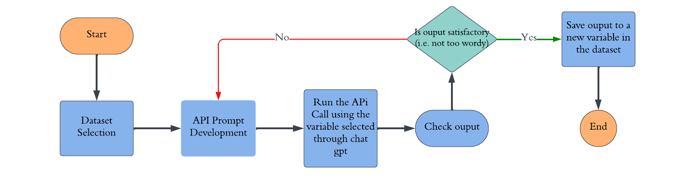
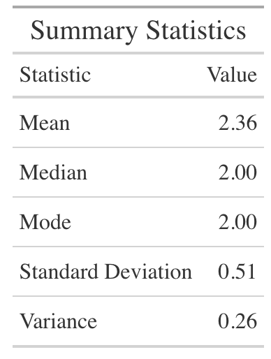
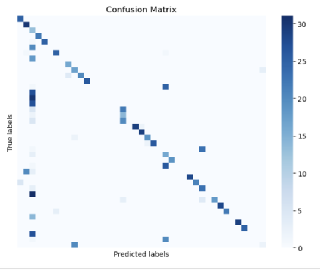
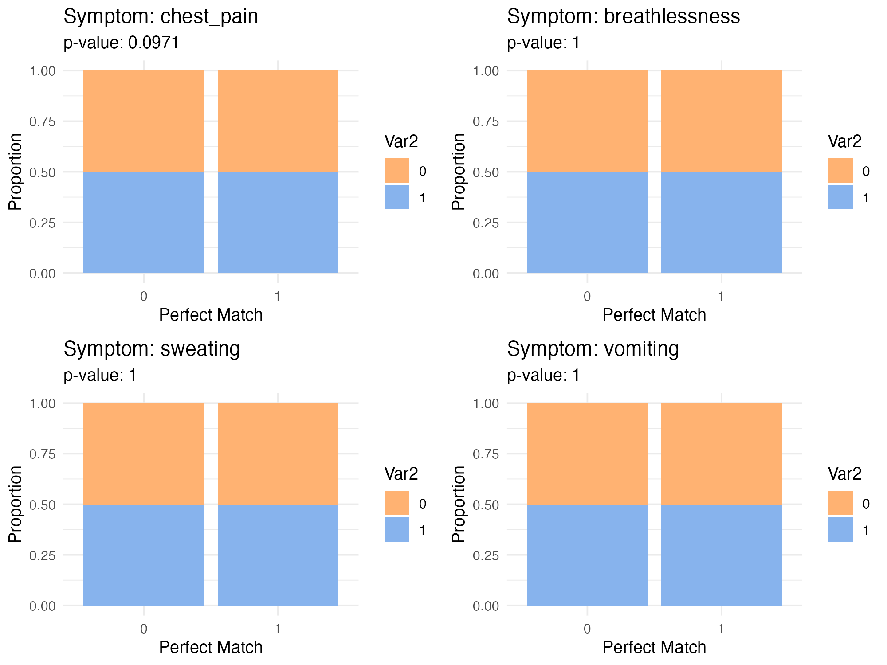
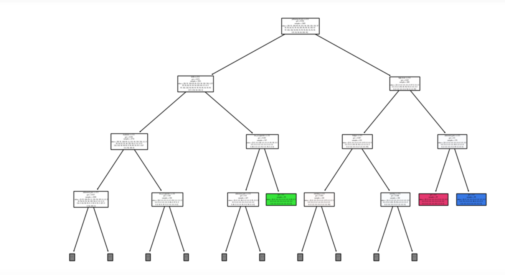
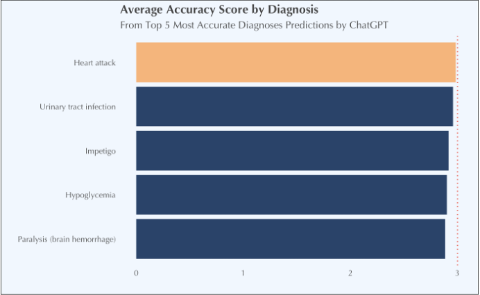
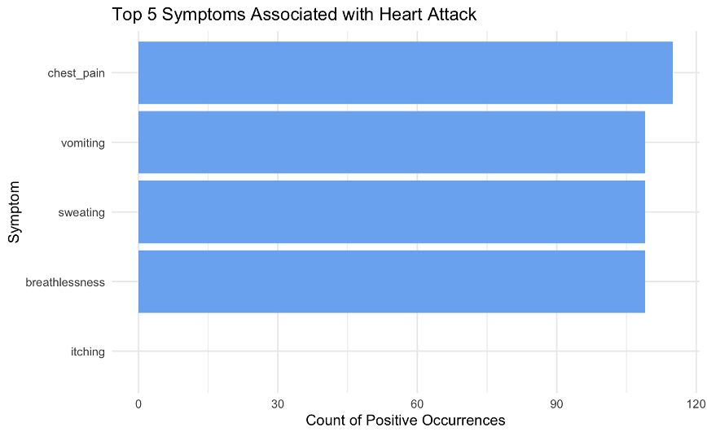

Conclusion
This study aimed to evaluate the diagnostic accuracy of generative AI, specifically ChatGPT, within a telehealth setting. The findings reveal both the potential and current limitations of using AI for medical diagnoses.
Key Findings
Diagnostic Performance: ChatGPT demonstrated some ability to group symptoms and provide preliminary diagnoses, achieving a mean match score of 2.2. However, the AI often fell short in delivering precise and accurate diagnoses, achieving an overall accuracy of 25.15%. This indicates that while generative AI can assist in preliminary diagnostic processes, it requires significant refinement before it can meet clinical standards.
Traditional Models: The performance of traditional machine learning models, such as Decision Trees and Logistic Regression, highlighted their strengths in classification tasks. These models outperformed ChatGPT with an accuracy of 57%, emphasizing the importance of targeted, data-driven approaches in achieving reliable diagnostic outcomes. This discrepancy suggests that while generative AI has broader capabilities, it may not yet be optimized for specific, nuanced tasks like medical diagnosis.
Implications for Clinical Use
Integration of Real-World Data: The study underscores the critical need for the integration of real-world clinical data to validate AI models. Synthetic data, while useful for initial testing, may not fully capture the complexity and variability of real patient scenarios, potentially leading to an overestimation of AI performance. Future studies should prioritize the use of diverse and representative clinical datasets to ensure the generalizability and robustness of AI models.
Human Oversight: The study highlights the importance of human oversight in AI-assisted diagnostics. The potential for AI to over-predict or misclassify conditions necessitates continuous human involvement to ensure patient safety and care quality. This collaboration between AI and human clinicians is crucial for enhancing the reliability of diagnostic processes.
Ethical Considerations
- Data Privacy and Bias Mitigation: Ethical considerations, such as data privacy, informed consent, and bias mitigation, are critical in the implementation of AI in healthcare. The risk of AI models reinforcing or amplifying existing biases is a major concern. To address this, it is essential to establish strong ethical frameworks that promote fairness, transparency, and trust in AI diagnostics. Given the use of synthetic data in this study, mitigating bias was a top priority. We applied methods like symptom randomization to minimize potential biases. Additionally, we adhered to stringent data privacy protocols, ensuring that all synthetic data used met privacy standards.
Future Research Directions
Future research will focus on integrating real-world clinical data, addressing challenges such as data variability and privacy concerns. To navigate these obstacles, we plan to collaborate with healthcare providers to access diverse and representative datasets, ensuring that AI models are trained and tested in environments that closely resemble real-world conditions.
Looking ahead, research should concentrate on the following key areas:
- Integration of Real-World Data: Validating AI models with diverse clinical data is crucial for ensuring their applicability and accuracy in practical healthcare settings.
- Development of Hybrid Models: By combining AI’s computational power with the nuanced reasoning of human clinicians, we can achieve more accurate and reliable diagnostic outcomes. This hybrid approach aims to harness the strengths of both AI and human expertise.
- Ethical Oversight: Implementing robust ethical frameworks to address data privacy, informed consent, and bias mitigation is essential for building trust and ensuring that AI benefits all patients equitably.
Additionally, future research may explore the use of tools like Google Trends to analyze common symptom combinations and test AI models with real symptom data, incorporating variables such as age, weight, and medical history.
Business Applications of AI in Healthcare Diagnostics
Furthermore, the integration of artificial intelligence (AI) into healthcare diagnostics presents several pivotal business opportunities:
- Healthcare Accessibility
- Expanding Reach: AI-powered diagnostic tools can be deployed in remote and underserved regions, thereby extending essential healthcare services to areas with limited access. This capability significantly enhances healthcare delivery in regions that are otherwise challenging to service.
- Enhancing Telehealth: AI facilitates real-time diagnostics during virtual consultations, thereby augmenting the effectiveness and accessibility of telehealth services. This integration ensures that remote consultations are as reliable and informative as in-person visits.
- Operational Efficiency
- Reducing Workload: AI systems can automate preliminary diagnostic tasks, allowing healthcare providers to concentrate on more complex cases. This automation not only increases the number of patients that can be seen but also optimizes the allocation of healthcare resources.
- Streamlining Workflows: The integration of AI with electronic health records (EHR) systems can automate documentation processes, thereby reducing administrative burdens. This streamlining enhances both operational efficiency and the accuracy of medical records.
- Cost Reduction and Revenue Growth
- Lower Costs: By minimizing the need for expensive diagnostic tests, AI diagnostics can result in substantial cost savings for both healthcare providers and patients. This reduction in costs can enhance the overall financial efficiency of healthcare delivery.
- Revenue Optimization: Increased efficiency and diagnostic accuracy can lead to a higher patient throughput, thereby boosting revenue for healthcare providers. Improved operational effectiveness translates to financial growth and sustainability.
Final Thoughts
In conclusion, generative AI holds significant potential for transforming healthcare diagnostics. However, realizing this potential will require continuous refinement, ethical vigilance, and collaboration between AI developers and healthcare professionals. By addressing these challenges, we can enhance the reliability and accuracy of AI in healthcare, ultimately improving patient outcomes and the efficiency of healthcare delivery.
References
- Moulaei K. et al. (2024). Generative artificial intelligence in healthcare: A scoping review on benefits, challenges, and applications. International Journal of Medical Informatics, 188, 105474. https://doi.org/10.1016/j.ijmedinf.2024.105474
- Pathak, A. (2018, October 22). Understanding Confusion Matrix. Towards Data Science. https://towardsdatascience.com/understanding-confusion-matrix-a9ad42dcfd62
- Temsah M. H. et al. (2024). Transforming virtual healthcare: The potentials of ChatGPT-4omni in telemedicine. Cureus, 16(5), e61377. https://doi.org/10.7759/cureus.61377
- Talby, D. (2023, May 26). The dangers of using synthetic patient data to build healthcare AI models. Forbes. Retrieved from https://www.forbes.com/sites/forbestechcouncil/2023/05/26/the-dangers-of-using-synthetic-patient-data-to-build-healthcare-ai-models/
- Uptech Team. (n.d.). Generative AI in healthcare [Diagram]. Retrieved August 5, 2024, from https://www.uptech.team/blog/generative-ai-in-healthcare
Appendix
Appendix: List of Figures
Figure 1: A screenshot of the raw data prior to the Data Engineering process.

Figure 2: Count of each Diagnosis Present.

Figure 3: Top 10 Symptoms Present in Diagnoses.

Figure 4: Sankey flow diagram illustrating how the most common symptoms lead to specific diagnoses.
Figure 5: A Correlation Heatmap of the Top 10 Symptoms.

Figure 6: Correlation Matrix of Selected Symptoms.
 - Figure 7: Flowchart showing steps from dataset selection to diagnosis estimation using API calls.
- Figure 7: Flowchart showing steps from dataset selection to diagnosis estimation using API calls.

Figure 8: A visual flow chart illustrating the steps taken to further augment our data.

Figure 9: API Results: Majority of Diagnoses Did Not Match After ChatGPT Simulated a Doctor’s Diagnosis Based on Symptoms Text Match.

Figure 10: Summary statistics of Scale Match.

Figure 11: Distribution of ChatGPT’s Prognosis Match Scores on a 1-3 Scale (Original vs. Predicted).

Figure 12: Confusion Matrix Comparing ChatGPT Prognosis with Original Prognosis.

Figure 13: Precision Recall and F1-Score Evaluation.

Figure 14: Pearson’s Chi-squared test output.

Figure 15: A confusion matrix visualizing the distribution of diagnoses in our Logistic Regression model. Anything outside the diagonal line from top left to bottom right represents misdiagnosed cases, illustrating the challenges in achieving perfect accuracy.

- Figure 16: ROC curve illustrating the 100% accuracy rate achieved by the logistic regression model in diagnosing heart attacks.

- Figure 17: Fisher’s Exact Test on Assessing the Accuracy of Symptoms in Predicting Heart Attacks 
- Figure 18: Fisher’s Exact Test Results

Appendix: Supplemental Figures
1. How Diagnoses were grouped into Medical Families

2. The Decision Tree used for Machine Learning

3. Average Accuracy Score By Prognosis

4. Top 5 Symptoms Associated With Heart Attacks

5. Number of Symptoms per Prognosis